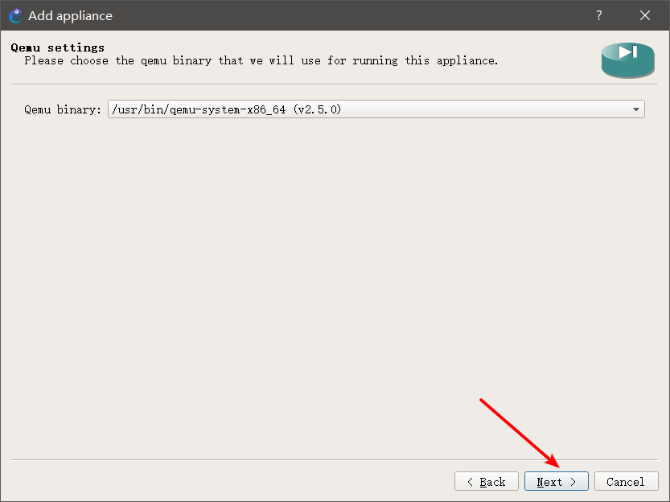
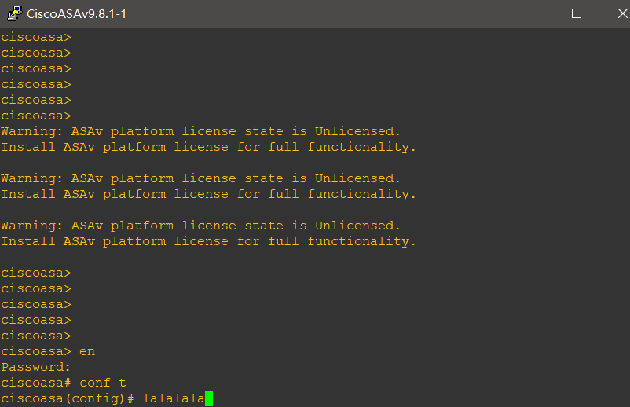

GNS3安装ASAv 981
大家好，我是青岛新思科的June，这篇博客说一下怎样安装ASAv981 以及 telnet连接（因为默认是vnc，很不好用）
准备工作：
ASAv981镜像一只（在群文件懒人包）
搭建好的GNS3环境一套（没有安装好的请移步GNS3详细安装步骤）
步骤：
打开GNS3环境，将Security devices一栏选中为installed&Avibalabala
找到下面的Cisco ASAv

将ASAv拖到左边空白的区域，此时会弹出ASAv的设置框。

next 不解释。完了之后，会选择服务器，因为我们是用的GNS3VM所以就安装在remote server，这里注意一下，run on 这一栏，填的就是 之前我说的 server里面的名字。不清楚的，回看GNS3安装步骤。![4]4.png)
next不解释。
这里我们选择ASAv981。点开左边小箭头后，下面露出了需要导入的文件的名字。

我们选中asav981.qcow2，左下角就出现import按钮。
我们点击import之后，选择本地的asav981.qcow2文件，然后确定。

next之后，他就会自己导入了，这里判断我们之前步骤是否正确有两个现象。有图有真相。
进度条跑完以后。之前found就变成了ready to install 。next 不多bibi。

yes。
next三连 最后点击OK。


然后我们回到主页面，将Security devices改回为installde appliances
可以看到，此时下面就出现了我们添加的ASAv981设备了。
拖出一个来，开机测试一下。 可以看到。能够正常开机了。这里会重启一次，时间比较长，等一会就行。

我们进入全局配置模式试一下。

好了，上面这几步，我们已经成功安装了ASAv981，但是，他是vnc连接的，vnc不太好用，我们将他改成telnet，用putty连接。在#模式下，输入命令，copy disk0：/coredumpinfo/coredump.cfg use_ttyS0
[^这里我的终端是putty，如果说你们关联的SecureCRT，或者Xshell，那么终端启动时就是CRT或者Xhell]:
然后一路回车。
然后 wr保存一下。

然后我们关掉设备，右键点击asav，选中第一个configure，对设备进行配置。

vCPUs 可以给到2，这样启动能快一些。然后最下边一栏，将vnc改为telnet 。然后OK。
最后我们start设备，这时候，弹出的就不是VNC终端了，而是putty终端。

当当当当！！！可以说时很舒服了。
同样，这里也会重启一次，耐心等待一下，时间比较长。

最后来测试一下。进入全局配置模式。
注意了，父老乡亲们！！！！
一、因为我们没有ASAv的激活码，所以，设备流量会有限制，但是不会妨碍我们足哦实验，虽然他会一直弹出提示，很烦人，我们忽略就好。
二、没有密码，直接回车就进入了。
三、转载请注明出处！！有啥问题欢迎提出，有什么更好的方案，欢迎拜访我群675342331